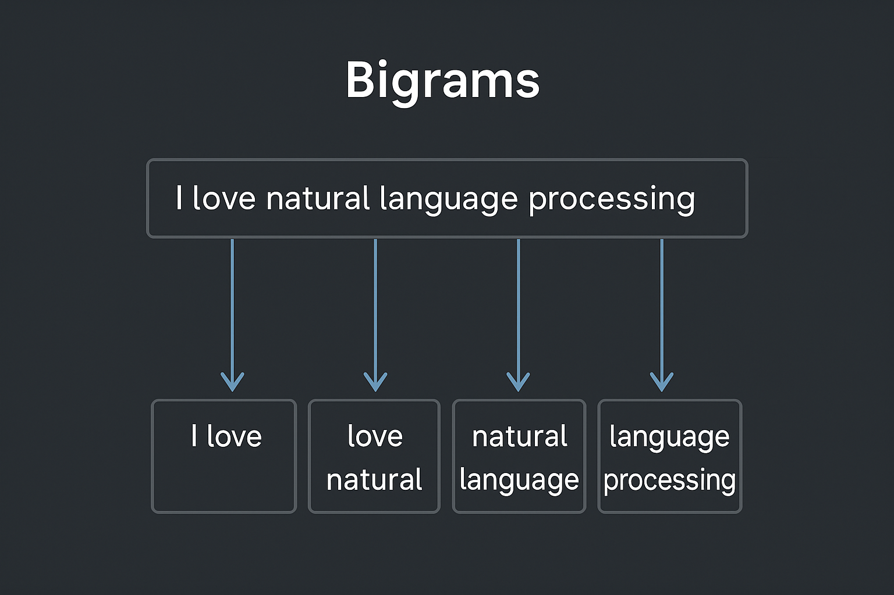

Bigrams and Disappointment:
A Very Short AI Adventure
2025-04-20

1. Setup: Curiosity Begins
I got really excited about all this AI stuff. Everyone kept saying, "It's just predicting the next word." Cool. But why does that work?
So I started from the beginning: Statistical Language Models, specifically bigrams. Predict the next word based on the last. Like T9, but with hope.
By the way, according to Dr. Lisa Feldman Barrett, the human brain works a bit like T9 too. What a funny coincidence!
2. The Plan
Let’s keep it simple:
- Use NewsAPI to get recent semiconductor headlines
- Tokenise them using NLTK
- Count the most frequent bigrams
Result? Total nonsense.
[
[["smart", "glasses"], 4],
[["lowest", "price"], 3],
[["motorola", "razr"], 3],
[["samsung", "galaxy"], 3],
[["la", "gama"], 3]
]
Some of these make sense. Most don’t. “la gama”? Really?
3. I Refuse to Give Up
Next up: sentiment analysis with TextBlob.
It gives you:
- Polarity: is it positive or negative?
- Subjectivity: is it fact or opinion?
Here’s an actual result from one of the news headlines:
{"headline": "Cerebras CEO actually finds common ground with Nvidia as startup notches IBM win",
"polarity": 0.17,
"subjectivity": 0.33}
Which kinda reads like: “meh, slightly positive, not too opinionated.” …and to be fair, that’s not wrong. But is it useful?
Not really. Most headlines just came back as zeros—no strong emotions, no real opinions. A lot of them were either too dry or too clickbaity for the sentiment tool to pick up anything useful.
4. A Final Push: Stock Data
Alright, let’s really try:
- Pull daily stock prices from
yfinance - Match those to daily average sentiment
- Look for correlation
Polarity vs. price change? Nothing. Volume vs. subjectivity? Nope.
5. What I Learned
So yeah—it didn’t work. At all.
But here’s what I took away:
- Bigram models are too shallow for modern news
- TextBlob sentiment struggles with finance headlines
- News-to-market correlation is messy, subtle, or nonexistent
That doesn’t mean the effort was wasted. It means I now understand why bigrams got left behind.
Like dial-up. Important, but not something you’d want to use today.
6. What’s Next
Stage II: Neural Language Models (2000s) Before ChatGPT, there were RNNs and early LSTM models.
Can I do anything interesting with them? Let’s find out.
Repo: GitHub - bigram-news-experiment
Includes:
- Scripts for collecting and analysing news headlines
- Sentiment results
- Stock data correlation attempts
- Everything that didn’t work